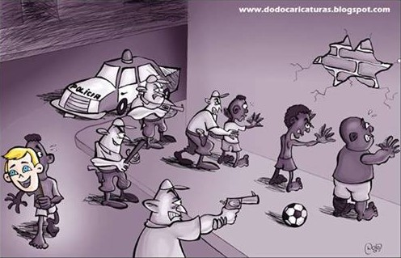

Ontem e hoje: O mesmo preconceito, Novas vozes
Poemas antigos
O preconceito é uma coisa que acompanha o ser humano, desde que existimos. Ele vem de várias formas: homofobia, xenofobia, gordofobia, etc. Dentre eles, temos o racismo, o mais influente desde o passado até agora. A seguir veremos alguns exemplos em forma de poema.
Poema "Crime"
Crime
De repente
Duma viatura
Saltam sobre mim
Vários policiais
Com cassetetes revólveres
Metralhadoras em punho
E com ódio
No olhar
Me cercam de repente
No meio da calçada
Num círculo de terror
Não me pedem documentos
Não me perguntam nada
Basta a minha cor
"Crime" mostra de forma direta e dolorosa a violência policial contra pessoas negras, evidenciando que muitas vezes a cor da pele basta para que alguém seja tratado como suspeito, ou pior.
Poema "Inocência"
Inocência
A menininha disse zangada
Que sua coleguinha ao lado
"Me xingara de negro"
E acrescentou
"Deus vai castigar ela professor
Ela ainda vai casar com um negro"
O poema "Inocência" revela como o racismo é aprendido desde cedo. A fala da criança mostra que mesmo sem entender o peso das palavras, ela já reproduz preconceitos herdados socialmente.
Poema "Fênix"
Fênix
Riram de nossos valores
Apagaram os nossos sonhos
Pisaram a nossa dignidade
Sufocaram a nossa voz
Nos transformaram em uma ilha
Cercada de mentiras por todos os lados
Nos dividiram
Nos puseram à margem de tudo
Irmãos
Precisamos reconstruir a nossa vida
Precisamos conquistar nosso lugar
Na casa que um dia nós edificamos
E onde não conseguimos entrar
Precisamos reacender os nossos sonhos
Precisamos levantar a nossa voz
Precisamos derrubar
A muralha de rocha e cal
Que ergueram em torno de nós
"Fênix" é um chamado à resistência e à união do povo negro. O poema denuncia o apagamento histórico e social, e convoca a reconstrução coletiva e o renascimento da dignidade.